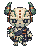
NPC-0034
回收聚落 · 信使生成原稿NPC-0035
回收聚落 · 夜間巡查員生成原稿NPC-0036
回收聚落 · 醫療助手生成原稿NPC-0037
回收聚落 · 植栽照護員生成原稿NPC-0038
回收聚落 · 材料回收員生成原稿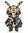
NPC-0039
回收聚落 · 渡運接待員生成原稿NPC-0040
回收聚落 · 退休居民生成原稿NPC-0041
轉運聚落 · 修理工生成原稿NPC-0042
轉運聚落 · 搬運員生成原稿NPC-0043
轉運聚落 · 街食攤販生成原稿NPC-0044
轉運聚落 · 信使生成原稿NPC-0045
轉運聚落 · 夜間巡查員生成原稿NPC-0046
轉運聚落 · 醫療助手生成原稿NPC-0047
轉運聚落 · 植栽照護員生成原稿NPC-0048
轉運聚落 · 材料回收員生成原稿NPC-0049
轉運聚落 · 渡運接待員生成原稿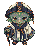
NPC-0050
轉運聚落 · 退休居民生成原稿NPC-0051
穗契城 · 修理工生成原稿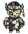
NPC-0052
穗契城 · 搬運員生成原稿NPC-0053
穗契城 · 街食攤販生成原稿NPC-0054
穗契城 · 信使生成原稿NPC-0055
穗契城 · 夜間巡查員生成原稿NPC-0056
穗契城 · 醫療助手生成原稿NPC-0057
穗契城 · 植栽照護員生成原稿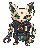
NPC-0058
穗契城 · 材料回收員生成原稿NPC-0059
穗契城 · 渡運接待員生成原稿NPC-0060
穗契城 · 退休居民生成原稿NPC-0061
藥畦鎮 · 修理工生成原稿NPC-0062
藥畦鎮 · 搬運員生成原稿NPC-0063
藥畦鎮 · 街食攤販生成原稿NPC-0064
藥畦鎮 · 信使生成原稿NPC-0065
藥畦鎮 · 夜間巡查員生成原稿NPC-0066
藥畦鎮 · 醫療助手生成原稿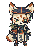
NPC-0067
藥畦鎮 · 植栽照護員生成原稿NPC-0068
藥畦鎮 · 材料回收員生成原稿NPC-0069
藥畦鎮 · 渡運接待員生成原稿NPC-0070
藥畦鎮 · 退休居民生成原稿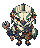
NPC-0071
風磨埠 · 修理工生成原稿NPC-0072
風磨埠 · 搬運員生成原稿NPC-0073
風磨埠 · 街食攤販生成原稿NPC-0074
風磨埠 · 信使生成原稿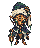
NPC-0075
風磨埠 · 夜間巡查員生成原稿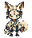
NPC-0076
風磨埠 · 醫療助手生成原稿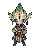
NPC-0077
風磨埠 · 植栽照護員生成原稿NPC-0078
風磨埠 · 材料回收員生成原稿NPC-0079
風磨埠 · 渡運接待員生成原稿NPC-0080
風磨埠 · 退休居民生成原稿NPC-0081
泉衡城 · 修理工生成原稿NPC-0082
泉衡城 · 搬運員生成原稿NPC-0083
泉衡城 · 街食攤販生成原稿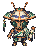
NPC-0084
泉衡城 · 信使生成原稿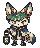
NPC-0085
泉衡城 · 夜間巡查員生成原稿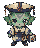
NPC-0086
泉衡城 · 醫療助手生成原稿NPC-0087
泉衡城 · 植栽照護員生成原稿NPC-0088
泉衡城 · 材料回收員生成原稿NPC-0089
泉衡城 · 渡運接待員生成原稿NPC-0090
泉衡城 · 退休居民生成原稿NPC-0091
濾心鎮 · 修理工生成原稿NPC-0092
濾心鎮 · 搬運員生成原稿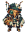
NPC-0093
濾心鎮 · 街食攤販生成原稿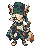
NPC-0094
濾心鎮 · 信使生成原稿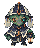
NPC-0095
濾心鎮 · 夜間巡查員生成原稿NPC-0096
濾心鎮 · 醫療助手生成原稿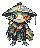
NPC-0097
濾心鎮 · 植栽照護員生成原稿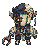
NPC-0098
濾心鎮 · 材料回收員生成原稿NPC-0099
濾心鎮 · 渡運接待員生成原稿NPC-0100
濾心鎮 · 退休居民生成原稿NPC-0101
演武城區 · 修理工生成原稿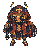
NPC-0102
演武城區 · 搬運員生成原稿NPC-0103
演武城區 · 街食攤販生成原稿NPC-0104
演武城區 · 信使生成原稿NPC-0105
演武城區 · 夜間巡查員生成原稿NPC-0106
演武城區 · 醫療助手生成原稿NPC-0107
演武城區 · 植栽照護員生成原稿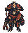
NPC-0108
演武城區 · 材料回收員生成原稿NPC-0109
演武城區 · 渡運接待員生成原稿NPC-0110
演武城區 · 退休居民生成原稿NPC-0111
採石城區 · 修理工生成原稿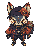
NPC-0112
採石城區 · 搬運員生成原稿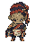
NPC-0113
採石城區 · 街食攤販生成原稿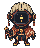
NPC-0114
採石城區 · 信使生成原稿NPC-0115
採石城區 · 夜間巡查員生成原稿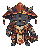
NPC-0116
採石城區 · 醫療助手生成原稿NPC-0117
採石城區 · 植栽照護員生成原稿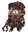
NPC-0118
採石城區 · 材料回收員生成原稿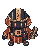
NPC-0119
採石城區 · 渡運接待員生成原稿NPC-0120
採石城區 · 退休居民生成原稿NPC-0121
赤旌京 · 修理工生成原稿NPC-0122
赤旌京 · 搬運員生成原稿NPC-0123
赤旌京 · 街食攤販生成原稿NPC-0124
赤旌京 · 信使生成原稿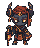
NPC-0125
赤旌京 · 夜間巡查員生成原稿NPC-0126
赤旌京 · 醫療助手生成原稿NPC-0127
赤旌京 · 植栽照護員生成原稿NPC-0128
赤旌京 · 材料回收員生成原稿NPC-0129
赤旌京 · 渡運接待員生成原稿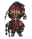
NPC-0130
赤旌京 · 退休居民生成原稿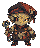